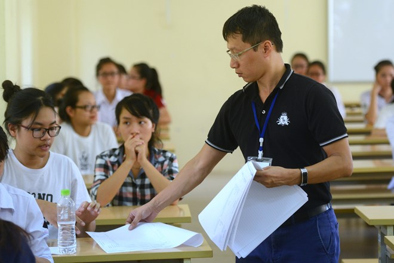
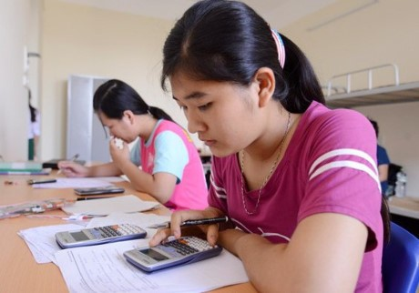

<section class="section-wrap" style="margin-top: 60px;">
	<div class="thongtin-wrap" style="position: relative;">
					<div class="quangcao" style="width: 275px; height: 800px; position: absolute; top: 20px; left: 0px;">
						
						
					</div>
	<div class="container infomation-content">
		<div class="infomation-content-us">
			<h1 class="the-article-title cms-title">Bộ Giáo dục ra đề minh họa, trường đại học vẫn hoang mang</h1>
			<p class="the-article-summary cms-desc">
				Sau khi Bộ GD&amp;ĐT công bố đề thi minh họa THPT quốc gia 2017, nhiều trường đại học phải họp, xem xét lại phương án tuyển sinh cho năm học tới.
			</p>
			<div class="the-article-body cms-body">
					<p>Năm 2017, Bộ GD&amp;ĐT sẽ tổ chức thi trắc nghiệm cho tất cả các môn, trừ Ngữ văn. Mặc dù, hình thức thi trắc nghiệm đã phổ biến trên thế giới và được đánh giá là khá khách quan, các trường vẫn lo ngại hình thức thi mới sẽ ảnh hưởng chất lượng tuyển sinh đầu vào.</p>
					<h4><strong>Trường lúng túng trong phương án tuyển sinh</strong></h4>
					<p>Bộ đề minh họa cũng là một trong những yếu tố khiến các trường đại học, cao đẳng lúng túng trong việc tuyển sinh cho năm học tới.</p>
					<p>Trao đổi với <em>Zing.vn</em>, ông Nguyễn Phong Điền, Trưởng phòng Đào tạo, Đại học Bách khoa Hà Nội, cho biết trường chưa có phương án tuyển sinh chính thức cho năm 2017.</p>
					<p>Theo ông Điền, đề thi minh họa môn Toán đảm bảo mục đích xét tốt nghiệp THPT. Nếu dùng kết quả đó để tuyển sinh, trường cần thảo luận kỹ càng để đưa ra phương án nhằm tuyển chọn được thí sinh tốt. </p>
					<p>Cá nhân ông cho rằng môn Toán có kiến thức tương tự như hai năm gần đây nhưng vì ra dưới hình thức trắc nghiệm, thí sinh dễ trả lời đúng hơn.</p>
					<table class="picture" align="center">
					<tbody>
					<tr>
					<td >
					</tr>
					<tr>
					<td class="pCaption caption">Các trường đang xem xét điều chỉnh phương án tuyển sinh phù hợp hình thức thi mới. Ảnh minh họa:&nbsp;<em>Tiến Tuấn.</em></td>
					</tr>
					</tbody>
					</table>
					<p>PGS.TS Lưu Văn An, Phó giám đốc Học viện Báo chí – Tuyên truyền, cho hay tính phân hóa của đề minh họa không cao dẫn đến việc trường khó tuyển được người giỏi thực sự. </p>
					<p>Các năm trước, thí sinh ứng tuyển vào các chuyên ngành Báo chí phải thi thêm kỳ thi năng khiếu, những chuyên ngành khác vẫn sử dụng kết quả kỳ thi THPT quốc gia. Tuy nhiên, năm nay, trường phải nghiên cứu kỹ hơn về phương thức tuyển sinh.</p>
					<p>“Hiện tại, trường chưa quyết định vì chưa hiểu hết phương thức của Bộ và phải thảo luận thêm để đưa ra phương án thích hợp”, thầy An nói.</p>
					<p>Theo ông&nbsp;Nguyễn Anh Tuấn, Trưởng phòng Đào tạo, Đại học Thủy Lợi, đề thi minh họa bao quát lượng kiến thức lớn. Tuy nhiên, trường vẫn chưa thể quyết định chắc chắn phương án tuyển sinh. </p>
					<p>Ông Tuấn thông tin Đại học Thủy Lợi vẫn nghiên cứu thêm, đồng thời tham khảo cách làm của các trường khác trước khi lên đề án tuyển sinh.</p>
					<p>Trong khi đó, trưởng phòng đào tạo một trường thuộc nhóm GX nhận xét đề minh họa môn Toán quá dễ. Các năm trước, môn Vật lý, Hóa học đều thi theo hình thức trắc nghiệm. Vì thế, các trường tốp trên thường quan tâm môn Toán để “lọc” thí sinh.</p>
					<p>Vị trưởng phòng này cho biết trường sẽ xem xét việc tổ chức thi riêng môn Toán theo hình thức tự luận trong 180 phút để chọn thí sinh.</p>
					<p>Căn cứ bộ đề minh họa, Đại học Hồng Đức cũng dự định điều chỉnh, đa dạng hóa phương thức tuyển sinh nhằm phù hợp hình thức thi mới.</p>
					<p>Ngoài ra, với hình thức thi trắc nghiệm, các trường lo ngại về tính khách quan, công bằng trong kết quả thi.</p>
					<p>Thầy Lưu Văn An khẳng định so với nội dung đề thi, các trường chú trọng hơn đến tính công bằng vì đề thi chung, cả nước sẽ có phổ điểm chung. Vấn đề quan trọng là Bộ phải đảm bảo tính công bằng, khách quan nhằm có kết quả thi chính xác.</p>
					<h4><strong>Học sinh, giáo viên gặp khó khăn khi chuyển hướng</strong></h4>
					<p>Trước khi Bộ GD&amp;ĐT công bố bộ đề minh họa, nhiều giáo viên, phụ huynh và học sinh lo lắng, hoang mang khi các môn Toán, Địa lý, Lịch sử đều chuyển từ hình thức thi trắc nghiệm sang tự luận.</p>
					<table class="picture" align="center">
					<tbody>
					<tr>
					<td >
					</tr>
					<tr>
					<td class="pCaption caption">Học sinh lớp 12 gấp rút ôn thi để phù hợp với hình thức thi trắc nghiệm. Ảnh:&nbsp;<em>Lê Hiếu.</em></td>
					</tr>
					</tbody>
					</table>
					<p>Nỗi lo ấy cũng không giảm khi Bộ công bố bộ đề. Hiện tại, giáo viên cuống cuồng đổi phương pháp dạy để phù hợp hình thức thi mới, trong khi học sinh và phụ huynh sốt sắng tìm đến các trung tâm luyện thi. </p>
					<p>Thời gian gần đây, trung tâm luyện thi mọc lên nhan nhản ở các nơi, đặc biệt ở thành phố lớn. Chỉ cần gõ từ khóa “luyện thi trắc nghiệm”, người dùng Google sẽ tìm được hàng loạt kết quả từ các trung tâm luyện thi đến bí quyết làm bài trắc nghiệm.</p>
					<p>Tuy nhiên, trong khi các trung tâm chuyển hướng khá nhanh, nhiều giáo viên lại gặp khó khăn trong việc dạy học, ôn thi theo hình thức mới. </p>
					<p>Theo đánh giá của một giáo viên ở TP.HCM, việc soạn bộ đề trắc nghiệm không đơn giản vì giáo viên vừa phải đảm bảo tính chính xác cho từng câu vừa phải chắc chắn đề bao quát lượng kiến thức lớn.</p>
					<p>Trên thực tế, đề thi minh họa được đánh giá khá dễ. Vì thế, vấn đề đáng lo ngại nằm ở thời gian làm bài hạn chế. </p>
					<p>Thời gian làm bài bị rút ngắn yêu cầu thí sinh phải tính toán nhanh và thuộc lý thuyết đối với môn Toán và Khoa học Tự nhiên. </p>
					<p>Trong khi đó, môn Văn chỉ thi trong 60 phút buộc học sinh phải làm quen với cách viết ngắn gọn, chính xác và thuyết phục thay vì lối viết dài, đề cao cảm xúc như trước đây.</p>
					<p>Ngoài ra, đến thời điểm hiện tại, các trường đại học, cao đẳng chưa công bố phương thức tuyển sinh. Một số trường xem xét việc điều chỉnh phương án xét tuyển hoặc bổ sung thêm môn thi tự luận để “lọc” thí sinh.</p>
					<p>Điều này đồng nghĩa với việc học sinh vẫn chưa thể xác định chắc chắn cách học tập, ôn thi phù hợp với việc xét tốt nghiệp THPT và xét tuyển đại học.</p>
					<p>“Mặc dù Toán thi trắc nghiệm, em vẫn ôn thi theo kiểu thi tự luận chứ không dám chuyển hoàn toàn sang học cách làm bài trắc nghiệm. Vì nếu chờ đến khi trường công bố phương án tuyển sinh mới học, em sợ không kịp”, Thùy Dung, một học sinh lớp 12 ở Hà Tĩnh, cho biết.&nbsp;</p>
					<div class="notebox ncenter">
					<p>Chiều 5/10, Bộ GD&amp;ĐT công bố bộ đề thi minh họa THPT quốc gia 2017 với 14 môn. Trừ môn Văn, các môn khác thi theo hình thức trắc nghiệm.</p>
					<p>Theo đánh giá của các giáo viên THPT, đề vừa sức với học sinh, số câu hỏi khó giảm nhưng áp lực thời gian khiến thí sinh khó đạt điểm cao.&nbsp;</p>
					</div>

		</div>
	</div>
	</div>
</section>